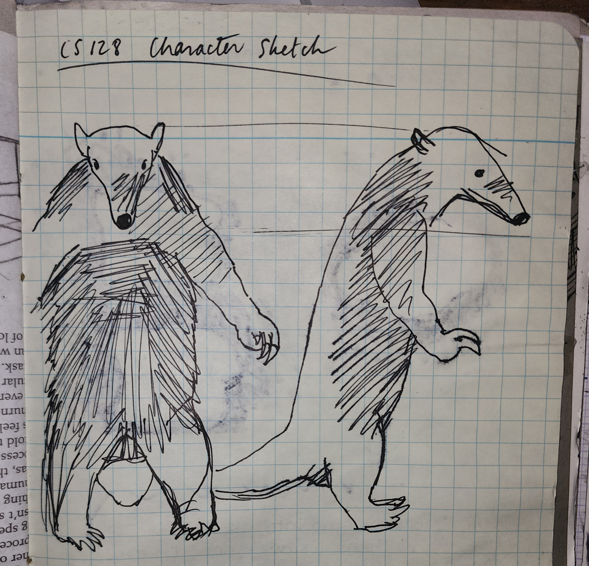
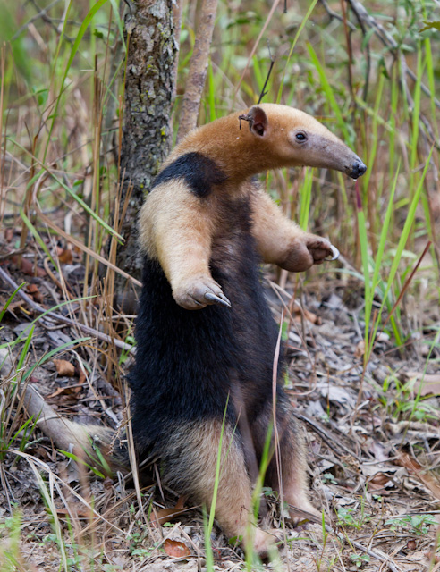

(1/5) CHARACTER DESIGN:
For this assignment, we were first told to design a bipedal character that we
would later animate walking. Mine is based off an anteater! Specifically,
the Tamandua Tetradactyla species. They stand up when they feel threatened.